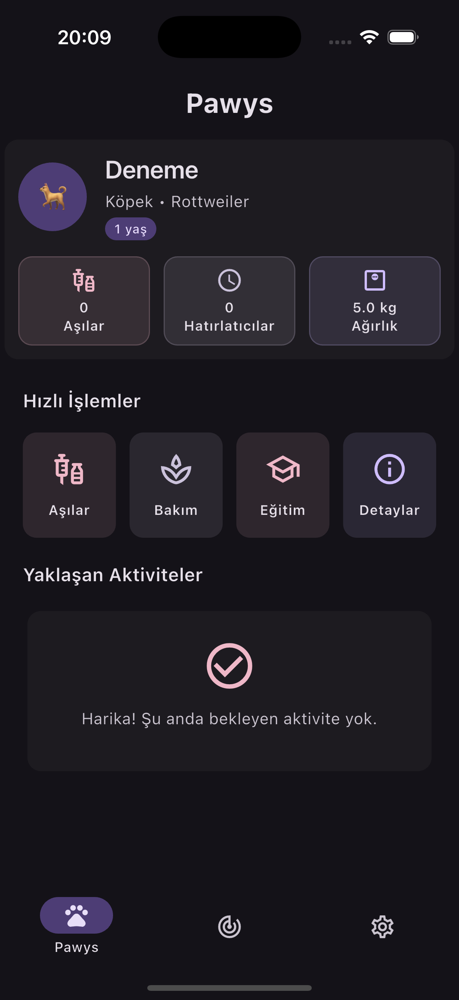
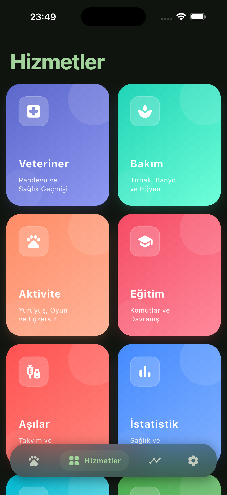
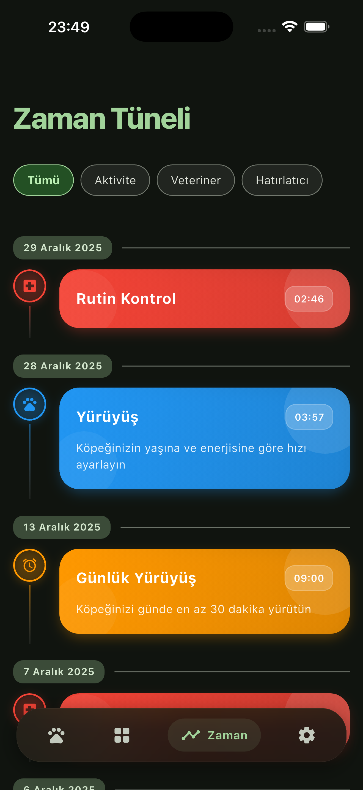
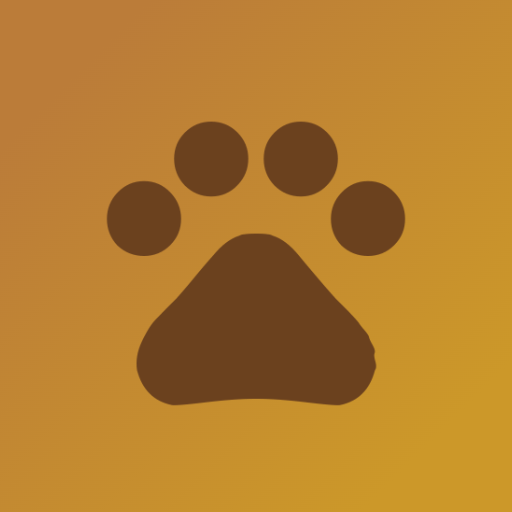

Dostunun her ihtiyaci
bir patinin ucunda.
Evcil dostlarinin saglik kayitlarini, asi takvimini ve beslenme programini tek bir yerden yonet.
Pawsy, evcil hayvan sahipleri icin tasarlanmis kapsamli bir bakim uygulamasidir. Evcil dostlarinin saglik, beslenme ve bakim ihtiyaclarini tek yerden yonet.
Zeytin
Golden Retriever · 3 yasDostuna ihtiyaci olan bakim
Saglik kayitlarindan asi hatirlaticilarina kadar evcil bakimini kolaylastiran araclar.
Saglik Kayitlari
Tum saglik gecmisini tek yerde tut, kolayca eris.
Asi Hatirlaticilar
Asi takvimini olustur, zamani gelince hatirla.
Beslenme Programi
Ogun ve porsiyon planini takip et.
Veteriner Randevu
Kontrol randevularini planla ve hatirlaticilar al.
Kilo & Buyume
Kilo degisimini ve buyumeyi grafiklerle izle.
Acil Durum Bilgileri
Onemli notlari ve acil bilgileri her an elinin altinda tut.
Uygulamadan gorunumler




Pawsy cok yakinda!
Evcil dostlarina en iyi bakimi sunmak icin uzerinde calisiyoruz. Gelismelerden haberdar olmak icin bizimle iletisimde kal.
Haberdar Ol